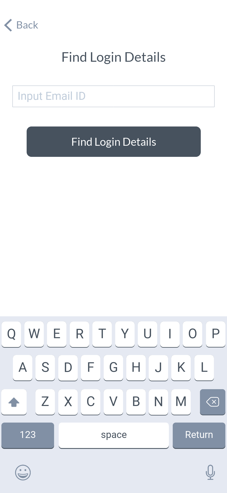

애플리케이션 설치 초기 단계에서 이용 방법에 대한 안내, 애플리케이션 사용을 위한 로그인 및 회원가입, 서비스의 사용 환경에 대한 설정, 서비스 이용약관 및 문의 등의 페이지는 모든 서비스에서 공통적으로 나타나는 가장 기본적인 화면들이다.
활용 방법 →애플리케이션을 설치하고 구동을 위해 로딩하는 화면으로 주로 서비스 로고가 노출된다.
애플리케이션 설치 초기에 로그인과 회원가입을 유도하는 일반적인 화면이다. 서비스 로고, 서비스 무드를 나타낼 수 있는 대표 이미지, 서비스 키 카피, 로그인 및 회원가입 버튼으로 구성된다. 보통 신규 회원가입을 유도하기 위해 회원가입 버튼을 로그인 버튼보다 높은 위계로 노출하나, 서비스 기 회원가입 사용자의 접속이 많은 경우(보안상의 이유로 자주 로그아웃 되거나 기존 활성화된 웹 서비스를 보유하고 애플리케이션을 신규 런칭한 경우 등) 로그인 버튼을 높은 위계로 노출한다.
싱글 사인온 회원가입 버튼을 바로 노출하는 형태이다. 싱글 사인온을 통해 이메일 주소 등 서비스 이용에 필요한 정보를 받아올 수 있는 경우 사용자가 회원가입을 위한 정보를 작성하지 않고 빠르고 편리하게 싱글 사인온 로그인을 통해 바로 서비스에 가입하고 이용할 수 있기 때문에 많은 서비스들이 채택하고 있다.
‘회원가입’ 이나 ‘시작하기’와 같이 회원가입 버튼에 일반적으로 쓰이는 레이블을 노출하는 것이 아니라, 이 서비스를 통해 사용자가 얻을 수 있는 가치를 기입하는 형태이다. 다소 번거로울 수 있는 회원가입 프로세스 진행을 위한 버튼 선택을 유도하기 위해 사용된다. 이때 서비스 기 회원가입 사용자를 위한 로그인 기능은 신규 회원가입을 강조하기 위해 낮은 위계로 노출하기도 한다.
서비스를 통해 사용자가 얻을 수 있는 가치나 편의성 및 사용 방법에 대한 안내를 회원가입 및 로그인과 함께 노출한다. 사용자는 스와이프 동작으로 안내 이미지를 탐색하고 서비스 이용에 대해 소구될 수 있으며, 사용방법 또한 인지할 수 있다.
서비스 이용을 위한 사용자 입력 필드가 노출된다. 싱글 사인온 회원가입을 제공하는 경우 해당 버튼을 함께 노출하기도 한다. 보통 서비스 로그인 시 사용될 아이디, 패스워드, 기타 서비스 별 이용을 위해 필요한 사용자 정보(성별, 거주지 등)를 기입한다. 사용자가 입력한 모든 정보가 유효할 경우 회원가입 완료 버튼이 활성화된다. 근래 사용자는 극도의 편의를 추구하므로 싱글 사인온 기능을 제공하지 않는 서비스에 대한 회원가입을 기피하여, 서비스 사용을 위한 핵심 단계인 본 회원가입 단계에서 이탈할 소지가 있다. 이때 서비스 제작자는 한 페이지에 하나의 입력 필드만 명시하여 간편함을 강조하기도 한다.
이미 회원가입을 한 사용자가 보안이나 앱 재설치 등의 사유로 서비스 로그아웃 후 재접속 시 회원가입 시 등록한 아이디, 패스워드 혹은 싱글 사인온 버튼으로 로그인을 할 수 있는 화면이다. 로그인 정보를 분실했을 경우 찾을 수 있는 기능과 회원가입을 진행하지 않은 사용자가 다시 회원가입 페이지에 접근할 수 있도록 하는 기능을 낮은 위계로 함께 노출하여 계속 사용을 위해 로그인 정보를 찾아야 하는 사용자나 로그인 페이지에 잘못 진입한 사용자가 서비스 이용을 지속할 수 있도록 한다.
로그인 후 서비스의 대표 기능을 접할 수 있는 화면이다. 서비스 특성에 따라 홈 화면을 구성하는 컴포넌트는 상이하다.
로그인 정보를 분실한 사용자가 다시 로그인 정보를 찾을 수 있도록 하는 화면이다. 보통 서비스 가입 시 사용한 이메일 주소를 입력하도록 유도하고, 해당 이메일 주소로 비밀번호를 재설정하거나 임시 비밀번호를 발급하여 다시 로그인을 할 수 있도록 한다. 이때 입력한 이메일 주소가 회원가입되지 않은 이메일 주소라면 해당 이메일 주소로 신규 회원가입을 진행할 수 있도록 유도하기도 한다.
서비스 사용 환경을 설정하는 화면으로, 사용자가 서비스 가입 시 등록한 정보에 대한 확인 및 수정, 서비스 비구동 중 사용자가 받아볼 알림에 대한 설정, 서비스 이용약관 및 개인정보 취급방침과 같은 규약 확인, 고객센터 안내 등을 설정하고 접근할 수 있다. 서비스 특성에 따라 제공하는 설정 기능은 상이하며, 보통 서비스 내 특정 기능에 국한되는 기능이 아닌 일반적인 기능들을 설정할 수 있도록 한다.
서비스 소개 화면으로 ‘Settings’ 화면을 통해 접근하는 경우가 많다. 서비스의 대표 소개 문구나 소개 홈페이지, 버전 정보 등을 노출한다.
소셜 네트워킹, 커뮤니티
Photo & Video사진 및 비디오 캡처, 편집
Food & Drink레시피, 레스토랑 리뷰
Shopping쇼핑, 쿠폰, 상품 리뷰
Productivity작업·일정 관리 등 업무 효율화
News방송 미디어, 뉴스리더
Travel항공권·호텔 예약, 여행 계획 및 정보 찾기
Entertainment영상 콘텐츠, 공연 티켓 발권
Lifestyle부동산, 취미, 인테리어
Health & Fitness운동 추적, 명상, 체중 관리
Business공동 작업 관리, 구직
Finance모바일 뱅킹, 가계부
Education학습, 학교 포털
Weather날씨 예보·특보, 현지 날씨
Music음악 감상, 녹음·연주, 작곡
Utilities계산기 등 특정 작업
Books전자책, 인터렉티브 북
Navigation장소 검색, 길찾기